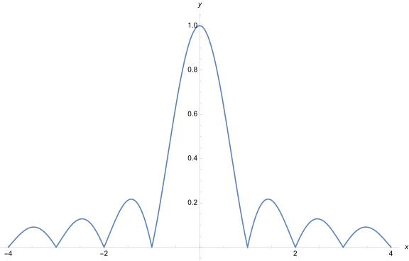
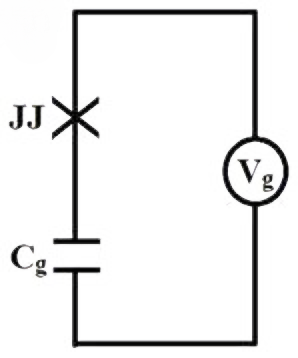
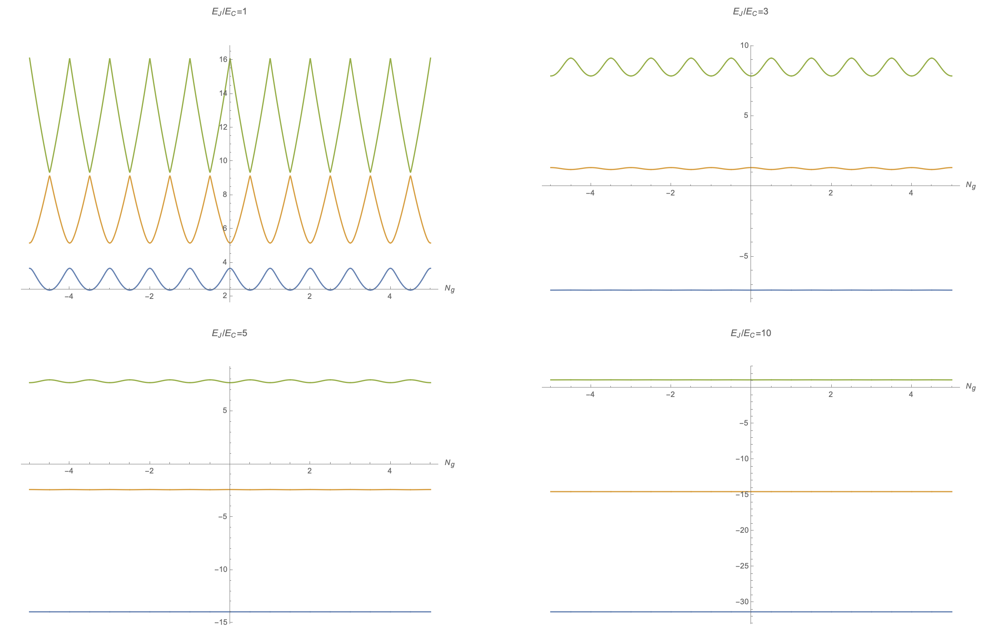
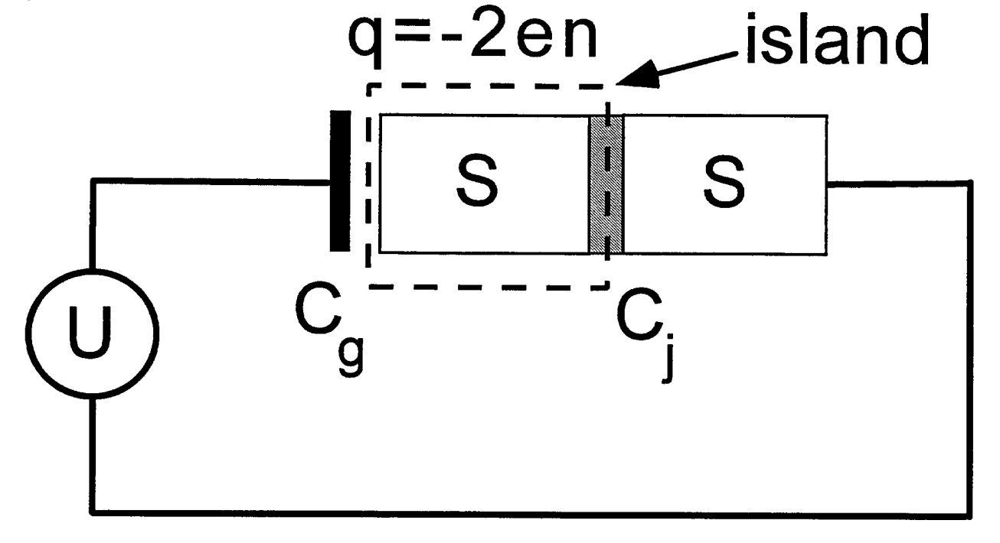
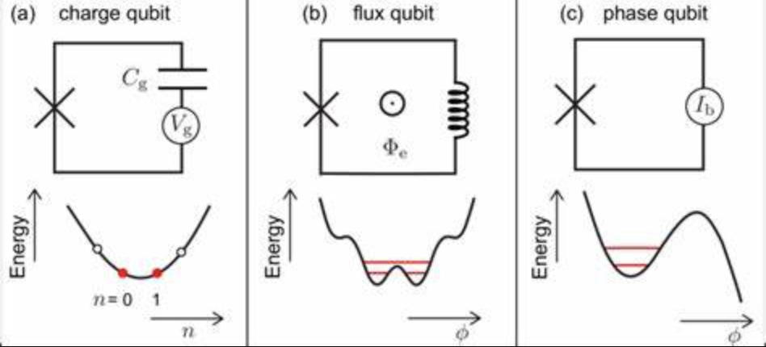
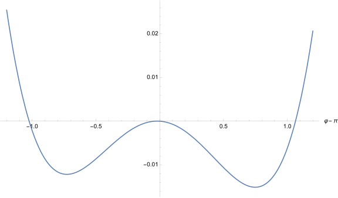
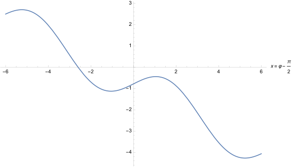

<!DOCTYPE html>
<html lang="zh-CN">

<head><meta charset="UTF-8">
<meta name="viewport" content="width=device-width">
<meta name="theme-color" content="#222" media="(prefers-color-scheme: dark)" />
<meta name="generator" content="Hugo 0.101.0" />
<link rel="shortcut icon" type="image/x-icon" href="/imgs/my_logo.png">
<link rel="icon" type="image/x-icon" href="/imgs/my_logo.png">
<link rel="icon" type="image/png" sizes="16x16" href="/imgs/my_logo.png">
<link rel="icon" type="image/png" sizes="32x32" href="/imgs/my_logo.png">
<link rel="apple-touch-icon" sizes="180x180" href="/imgs/my_logo.png">
<meta itemprop="name" content="从Josephson结到超导量子比特" />
<meta itemprop="description" content="一位喜欢撸猫的研究僧。" />
<meta itemprop="datePublished" ZgotmplZ />
<meta itemprop="dateModified" ZgotmplZ />
<meta itemprop="image" content="https://yuanlucas.github.io/imgs/my_avatar.png" />
<meta itemprop="keywords" content="超导物理" />

<meta property="og:type" content="article" />
<meta property="og:title" content="从Josephson结到超导量子比特" />
<meta property="og:description" content="一位喜欢撸猫的研究僧。" />
<meta property="og:image" content="/imgs/my_avatar.png" />
<meta property="og:image:width" content="312" />
<meta property="og:image:height" content="312" />
<meta property="og:image:type" content="image/jpeg/png/svg/jpg" />
<meta property="og:url" content="https://yuanlucas.github.io/posts/josephson_junction/"/>
<meta property="og:site_name" content="klucas 的个人网站" />
<meta property="og:locale" content="zh-CN"/>
<meta property="article:author" content="klucas" />
<meta property="article:published_time" content="2022-11-30 00:00:00 &#43;0000 UTC" />
<meta property="article:modified_time" content="2022-11-30 00:00:00 &#43;0000 UTC" />


  <link type="text/css" rel="stylesheet" href="https://unpkg.com/@fortawesome/fontawesome-free@6.1.2/css/all.min.css" />
  <link type="text/css" rel="stylesheet" href="https://unpkg.com/animate.css@3.1.1/animate.min.css" />


  <link rel="stylesheet" href="/css/main.min.cfb74a9c22d487dd8b0fd652e295cf01eeacc4eb37ebf8fe1c06dc5cb24ccf73.css">
  <style type="text/css">
    .post-footer hr:after {
      content: "~ 我可是有底线的哟 ~";
    }
  </style>
  <script class="next-config" data-name="page" type="application/json">{"comments":false,"isHome":false,"isPage":true,"path":"josephson_junction","permalink":"https://yuanlucas.github.io/posts/josephson_junction/","title":"从Josephson结到超导量子比特"}</script>
  <script type="text/javascript">
  document.addEventListener('DOMContentLoaded', () => {
    var script = document.createElement('script');
      
    script.charset = "UTF-8";
    script.id      = "LA_COLLECT";
    script.src     = "https:\/\/sdk.51.la\/js-sdk-pro.min.js";
    script.async   = "true"
    script.onload = function() {
    
      LA.init({ id: "JlSteTd88WkbJxE2",ck: "JlSteTd88WkbJxE2", autoTrack:true });
    
    }

  document.head.appendChild(script);
});
</script>


  <title>从Josephson结到超导量子比特 - klucas 的个人网站</title>
  <noscript>
    <link rel="stylesheet" href="/css/noscript.css">
  </noscript>
</head>

<body itemscope itemtype="http://schema.org/WebPage"  class="use-motion" >
  <div class="headband"></div>
  <main class="main">
    <header class="header" itemscope itemtype="http://schema.org/WPHeader">
      <div class="header-inner">
<div class="site-brand-container">
  <div class="site-nav-toggle">
    <div class="toggle" aria-label="切换导航栏" role="button">
        <span class="toggle-line"></span>
        <span class="toggle-line"></span>
        <span class="toggle-line"></span>
    </div>
  </div>

  <div class="site-meta">

    <a href="/" class="brand" rel="start">
      <i class="logo-line"></i>
      <h1 class="site-title">klucas 的个人网站</h1>
      <i class="logo-line"></i>
    </a>
    
      <p class="site-subtitle" itemprop="description">记录学习生活</p>
  </div>

  <div class="site-nav-right">
    <div class="toggle popup-trigger">
      
      <i class="fa fa-search fa-fw fa-lg"></i>
    </div>
  </div>
</div>

<nav class="site-nav">
  <ul class="main-menu menu">
    <li class="menu-item menu-item-home">
      <a href="/" class="hvr-icon-pulse " rel="section"><i class="fa fa-home hvr-icon"></i>首页
      </a>
    </li>
    <li class="menu-item menu-item-about">
      <a href="/about.html" class="hvr-icon-pulse " rel="section"><i class="fa fa-user hvr-icon"></i>关于
      </a>
    </li>
    <li class="menu-item menu-item-archives">
      <a href="/posts/" class="hvr-icon-pulse " rel="section"><i class="fa fa-archive hvr-icon"></i>归档
      </a>
    </li>
    <li class="menu-item menu-item-search">
      <a role="button" class="popup-trigger hvr-icon-pulse"><i class="fa fa-search fa-fw hvr-icon"></i>搜索
      </a>
    </li>
  </ul>
</nav>
      </div>
      <div class="toggle sidebar-toggle" role="button">
  <span class="toggle-line"></span>
  <span class="toggle-line"></span>
  <span class="toggle-line"></span>
</div>
<aside class="sidebar">
  <div class="sidebar-inner sidebar-nav-active sidebar-toc-active">
    <ul class="sidebar-nav">
      <li class="sidebar-nav-toc">
        文章目录
      </li>
      <li class="sidebar-nav-overview">
        站点概览
      </li>
    </ul>
    <div class="sidebar-panel-container">
      
      <div class="post-toc-wrap sidebar-panel">
        <div class="post-toc animated"><nav id="TableOfContents">
  <ul>
    <li><a href="#1-josephson-方程">1. Josephson 方程</a></li>
    <li><a href="#2-josephson结的能量量子化">2. Josephson结的能量量子化</a>
      <ul>
        <li><a href="#21-先写出拉氏量和哈氏量">2.1 先写出拉氏量和哈氏量</a></li>
        <li><a href="#22-第一次量子化">2.2 第一次量子化</a></li>
      </ul>
    </li>
    <li><a href="#3-squid">3. SQUID</a></li>
    <li><a href="#4-charge-qubit">4. Charge Qubit</a>
      <ul>
        <li><a href="#41-先写出拉氏量和哈氏量">4.1 先写出拉氏量和哈氏量</a></li>
        <li><a href="#42-能级">4.2 能级</a></li>
        <li><a href="#43-把cpb上cooper对的个数n当做qubit">4.3 把CPB上Cooper对的个数\(N\)当做qubit</a></li>
      </ul>
    </li>
    <li><a href="#5-flux-qubit">5. Flux Qubit</a></li>
    <li><a href="#6-phase-qubit">6. Phase Qubit</a></li>
    <li><a href="#7-总结">7. 总结</a></li>
  </ul>
</nav></div>
      </div>
      
      <div class="site-overview-wrap sidebar-panel">
        
<div class="site-author site-overview-item animated" itemprop="author" itemscope itemtype="http://schema.org/Person">
    
  <p class="site-author-name" itemprop="name">klucas</p>
  <div class="site-description" itemprop="description">一位喜欢撸猫的研究僧。</div>
</div>
<div class="site-state-wrap site-overview-item animated">
  <nav class="site-state">
    <div class="site-state-item site-state-posts">
      <a href="/posts/">
        <span class="site-state-item-count">25</span>
        <span class="site-state-item-name">日志</span>
      </a>
    </div>
    <div class="site-state-item site-state-categories">
      <a href="/categories/">
        <span class="site-state-item-count">4</span>
        <span class="site-state-item-name">分类</span>
      </a>
    </div>
    <div class="site-state-item site-state-tags">
      <a href="/tags/">
        <span class="site-state-item-count">15</span>
        <span class="site-state-item-name">标签</span>
      </a>
    </div>
  </nav>
</div>
<div class="links-of-social site-overview-item animated">


  <span class="links-of-social-item">
    <a href="https://github.com/YuanLucas" title="Github → https://github.com/YuanLucas" rel="noopener" class="hvr-icon-pulse" target="_blank">
      <i class="fab fa-github fa-fw  hvr-icon "></i>Github
    </a>
  </span>
  <span class="links-of-social-item">
    <a href="mailto:yuanzheheng@sina.com" title="E-Mail → mailto:yuanzheheng@sina.com" rel="noopener" class="hvr-icon-pulse" target="_blank">
      <i class="fa fa-envelope fa-fw  hvr-icon "></i>E-Mail
    </a>
  </span>
</div>
<div class="cc-license animated" itemprop="license">
  <a href="https://creativecommons.org/licenses/by-nc-sa/4.0/deed.zh" class="cc-opacity" rel="noopener" target="_blank" title="共享知识">
    
  </a>
</div>
<div class="links-of-blogroll site-overview-item animated">
  <div class="links-of-blogroll-title">
    <i class="fa fa-globe fa-fw"></i>友情链接
  </div>
  <ul class="links-of-blogroll-list">
    <li class="links-of-blogroll-item">
      <a href="https://www.guanjihuan.com/" title="https://www.guanjihuan.com/" target="_blank">关济寰</a>
    </li>
    <li class="links-of-blogroll-item">
      <a href="https://ericrzhu.com/" title="https://ericrzhu.com/" target="_blank">HRZ</a>
    </li>
  </ul>
</div>
      </div>
    </div>
    <div class="back-to-top animated" role="button" aria-label="">
      <i class="fa fa-arrow-up"></i>
      <span>0%</span>
    </div>
  </div>
</aside>
<div class="sidebar-dimmer"></div>
    </header>
    
    
  <div class="reading-progress-bar"></div>
  <a role="button" class="book-mark-link book-mark-link-fixed"></a>
<a href="https://github.com/YuanLucas" rel="noopener external nofollow noreferrer" target="_blank" title="Follow me on GitHub" class="exturl github-corner">
  <svg width="80" height="80" viewBox="0 0 250 250" aria-hidden="true"><path d="M0,0 L115,115 L130,115 L142,142 L250,250 L250,0 Z"></path><path d="M128.3,109.0 C113.8,99.7 119.0,89.6 119.0,89.6 C122.0,82.7 120.5,78.6 120.5,78.6 C119.2,72.0 123.4,76.3 123.4,76.3 C127.3,80.9 125.5,87.3 125.5,87.3 C122.9,97.6 130.6,101.9 134.4,103.2" fill="currentColor" style="transform-origin: 130px 106px;" class="octo-arm"></path><path d="M115.0,115.0 C114.9,115.1 118.7,116.5 119.8,115.4 L133.7,101.6 C136.9,99.2 139.9,98.4 142.2,98.6 C133.8,88.0 127.5,74.4 143.8,58.0 C148.5,53.4 154.0,51.2 159.7,51.0 C160.3,49.4 163.2,43.6 171.4,40.1 C171.4,40.1 176.1,42.5 178.8,56.2 C183.1,58.6 187.2,61.8 190.9,65.4 C194.5,69.0 197.7,73.2 200.1,77.6 C213.8,80.2 216.3,84.9 216.3,84.9 C212.7,93.1 206.9,96.0 205.4,96.6 C205.1,102.4 203.0,107.8 198.3,112.5 C181.9,128.9 168.3,122.5 157.7,114.1 C157.9,116.9 156.7,120.9 152.7,124.9 L141.0,136.5 C139.8,137.7 141.6,141.9 141.8,141.8 Z" fill="currentColor" class="octo-body"></path></svg>
</a>

<noscript>
  <div class="noscript-warning">Theme NexT works best with JavaScript enabled</div>
</noscript>
    <div class="main-inner post posts-expand">
      
  <div class="post-block">
  <article itemscope itemtype="http://schema.org/Article" class="post-content" lang="">
    <link itemprop="mainEntityOfPage" href="https://yuanlucas.github.io/posts/josephson_junction/">
    <span hidden itemprop="author" itemscope itemtype="http://schema.org/Person">
      <meta itemprop="image" content="/imgs/my_avatar.png">
      <meta itemprop="name" content="klucas">
    </span>
    <span hidden itemprop="publisher" itemscope itemtype="http://schema.org/Organization">
      <meta itemprop="name" content="klucas">
      <meta itemprop="description" content="一位喜欢撸猫的研究僧。">
    </span>
    <span hidden itemprop="post" itemscope itemtype="http://schema.org/CreativeWork">
      <meta itemprop="name" content="从Josephson结到超导量子比特">
      <meta itemprop="description" content="  本文讨论Josephson Junction。">
    </span>
    <header class="post-header">
       <h1 class="post-title" itemprop="name headline">从Josephson结到超导量子比特 </h1> <div class="post-meta-container">
  <div class="post-meta-items">
    


<span class="post-meta-item">
  <span class="post-meta-item-icon">
    <i class="far fa-calendar"></i>
  </span>
  <span class="post-meta-item-text">发表于：</span>
  <time title="发表于：2022-11-30 00:00:00 &#43;0000 UTC" itemprop="dateCreated datePublished" datetime="2022-11-30 00:00:00 &#43;0000 UTC">2022-11-30</time>
</span>
    
    
  </div>
  <div class="post-meta-items">
    
<span class="post-meta-item" title="字数">
  <span class="post-meta-item-icon">
    <i class="far fa-file-word"></i>
  </span>
  <span class="post-meta-item-text">字数：</span><span>4314</span>
</span>
    
<span class="post-meta-item" title="阅读">
  <span class="post-meta-item-icon">
    <i class="far fa-clock"></i>
  </span>
  <span class="post-meta-item-text">阅读：&asymp;</span>
  <span>9分钟</span>
</span>

    
<span class="post-meta-item" title="浏览">
  <span class="post-meta-item-icon">
    <i class="far fa-eye"></i>
  </span>
  <span class="post-meta-item-text">
  浏览：
  </span>
  <span class="waline-pageview-count" data-path="/posts/josephson_junction/"><i class="fa fa-sync fa-spin"></i></span>
</span>

  </div>
  
</div>

    </header>
    <div class="post-body" itemprop="articleBody">
      
  <p>  本文讨论Josephson Junction。</p></p>
<hr>
<p>  感觉国内的一些教材写的太乱了，索性自己整理一下，并不会面面俱到。</p>
<p>  原则上是应该配点图的，但是画图太麻烦了。</p>
<p>  本文取电子电荷为\(-e\)。</p>
<h1 id="1-josephson-方程">1. Josephson 方程</h1>
<p>  Josephson 方程是一个唯象方程。假设Josephson结两端超导体的波函数分别为\(\Psi_1\),\(\Psi_2\)，当两部分超导体靠的很近的时候，会发生耦合，耦合强度用\(K\)表示，写成Schrödinger方程的形式，即：
$$
i\hbar\frac{\partial}{\partial t}\Psi_1=E_1\Psi_1+K\Psi_2
$$</p>
<p>$$
i\hbar\frac{\partial}{\partial t}\Psi_2=E_2\Psi_2+K\Psi_1
$$</p>
<p>将\(\Psi_1=\sqrt{\rho_1}e^{i\theta_1}\),\(\Psi_2=\sqrt{\rho_2}e^{i\theta_2}\),\(\varphi=\theta_2-\theta_1\)代入，得到：
$$\left\{
\begin{aligned}
\hbar\frac{\partial\rho_1}{\partial t}&amp;=2K\sqrt{\rho_1\rho_2}\sin\varphi \\
\hbar\frac{\partial\rho_2}{\partial t}&amp;=-2K\sqrt{\rho_1\rho_2}\sin\varphi \\
\hbar\frac{\partial\theta_1}{\partial t}&amp;=-K\sqrt{\frac{\rho_2}{\rho_1}}\cos\varphi-E_1 \\
\hbar\frac{\partial\theta_2}{\partial t}&amp;=-K\sqrt{\frac{\rho_1}{\rho_2}}\cos\varphi-E_2
\end{aligned}
\right.$$</p>
<p>注意到：
$$
2e\frac{\partial\rho_1}{\partial t}=-2e\frac{\partial\rho_2}{\partial t}=j_s=j_c\sin\varphi
$$</p>
<p>其中，
$$
j_c=\frac{4eK}{\hbar}\sqrt{\rho_1\rho_2}
$$</p>
<p>物理上这也是合理的，因为两端超导体中的Cooper对总量应该不变。</p>
<p>  关于\(\varphi\)，我们也能得到一个方程：
$$
\frac{\partial \varphi}{\partial t}=-\frac{K}{\hbar}\frac{\rho_1-\rho_2}{\sqrt{\rho_1\rho_2}}\cos\varphi+\omega_{12}
$$
  其中，
$$
\omega_{12}\equiv\frac{E_1-E_2}{\hbar}
$$</p>
<p>对于弱耦合情况，由于\(K\)很小，而且不同金属内的Cooper对密度都差不多，\(\rho_1\approx\rho_2\)。上式简化为：
$$
\frac{\partial \varphi}{\partial t}=\omega_{12}
$$</p>
<p>  因此Josephson结两端的能量差能引起波函数相位差随时间变化，现实中最常见的做法是在两端加一个电压，于是有
$$
\frac{\partial \varphi}{\partial t}=-\frac{2e}{\hbar}V
$$</p>
<p>  总结下来，Josephson方程为：
$$\boxed{
\begin{aligned}
j_s=j_c\sin\varphi \\
\frac{\partial\varphi}{\partial t}=-\frac{2eV}{\hbar}
\end{aligned}
}$$</p>
<details><summary>关于磁场对约瑟夫森效应的贡献</summary>
&emsp;&emsp;总结一下就是“有，但对于小结可以忽略”。
<p>  其实除了外加电压外，磁场也能造成相位差，但其只能引起相位差在空间内的变化。以磁场垂直结面的矩形小结为例有：
$$
I_c(B)=I_c(0)\left|\mathrm{sinc}\left(\frac{\pi\Phi_J}{\phi_0}\right)\right|
$$</p>
<p>\(\Phi_J\)是通过结的磁通量，\(\phi_0=h/2e\)是磁通量子。由于和<code>Fraunhofer衍射</code>很像，所以又被称为<code>超导宏观量子衍射</code>。</p>
<p></p>
<center>$$y=|\mathrm{sinc}(\pi x)|$$</center>
<p>  对于点接触和超导桥，由于其结面积很小，所以要想观察到\(I_c(B)=0\)，所需的磁场就很大，高达\(0.1～1T\)，实验中一般达不到。</p>
<p>  关于小结的<code>超导宏观量子衍射</code>，参看张裕恒的书，不再赘述。</p>
</details>
<h1 id="2-josephson结的能量量子化">2. Josephson结的能量量子化</h1>
<h2 id="21-先写出拉氏量和哈氏量">2.1 先写出拉氏量和哈氏量</h2>
<p>  实际通过Josephson结有三类：Josephson电流\(I_s\)，欧姆电流\(I_o\)和位移电流\(I_d\)，以电势从高到低为正方向即：
$$
I=I_s+I_o-I_d
$$</p>
<p>各个电流的大小近似有：
$$
I_s=I_c\sin\varphi
$$
$$
I_d=C\frac{\mathrm{d}V}{\mathrm{d}t}
$$
$$
I_o=\frac{V}{R}
$$</p>
<p>  忽略欧姆电流的贡献，考虑Josephson结并联电感\(C\)的模型，总电流为\(I\)，写出描述相位差的方程：
$$
\frac{\mathrm{d}^2\varphi}{\mathrm{d}t^2}=-\frac{2e}{\hbar}\frac{\mathrm{d}V}{\mathrm{d}t}=-\frac{2e}{C\hbar}\frac{\mathrm{d}Q}{\mathrm{d}t}=-\frac{2e}{C\hbar}(I_s\sin\varphi-I)
$$</p>
<p>类比Lagrange方程，写出拉氏量（或者类比牛顿运动方程凑）和动能、势能：
$$
\frac{\mathrm{d}}{\mathrm{d}t}\frac{\partial\mathcal{L}}{\partial\dot{\varphi}}-\frac{\partial\mathcal{L}}{\partial\varphi}=0
$$
$$\boxed{
\mathcal{L}=\frac{1}{2}\frac{C\hbar^2}{4e^2}\dot{\varphi}^2+\frac{I\hbar}{2e}\varphi+\frac{I_s\hbar}{2e}\cos\varphi}\equiv K-U
$$
$$
K=\frac{1}{2}\frac{C\hbar^2}{4e^2}\dot{\varphi}^2=\frac{1}{2}CV^2
$$
$$
U=-\frac{I\hbar}{2e}\varphi-\frac{I_s\hbar}{2e}\cos\varphi
$$</p>
<p>为了得到哈氏量，取广义动量，做Legendre变换：
$$
\pi=\frac{\partial\mathcal{L}}{\partial\dot{\varphi}}=\frac{C\hbar^2}{4e^2}\dot{\varphi}=-\frac{CV\hbar}{2e}=-\frac{Q\hbar}{2e}=\hbar N
$$
$$\boxed{
\mathcal{H}=\pi\dot{\varphi}-\mathcal{L}=\frac{E_C}{\hbar^2}\pi^2-E_J\cos\varphi-E_J\frac{I}{I_c}\varphi
}$$</p>
<p>其中，\(N\)是电感\(C\)上在高电势一侧的Cooper对数量，\(E_C,E_J\)分别为库伦能和约瑟夫森能：
$$
E_C=\frac{(2e)^2}{2C}, E_J=\frac{I_c\hbar}{2e}=\frac{I_c\phi_0}{2\pi}
$$</p>
<h2 id="22-第一次量子化">2.2 第一次量子化</h2>
<p>  从广义坐标和广义动量的对易关系出发：
$$
[\hat{\varphi},\hat{\pi}]=i\hbar
$$</p>
<p>推导出\(\hat{\varphi}\)和\(\hat{N}\)的对易关系：
$$
[\hat{\varphi},\hat{N}]=i
$$</p>
<p>哈氏量写成：
$$
\mathcal{H}=E_C\hat{N}^2-E_J\cos\hat{\varphi}-E_J\frac{I}{I_c}\hat{\varphi}
$$</p>
<p>在\(\varphi\)表象下就有：
$$
\hat{N}=-i\frac{\mathrm{d}}{\mathrm{d}\varphi}
$$
$$
\mathcal{H}=-E_C\frac{\mathrm{d}^2}{\mathrm{d}\varphi^2}-E_J\cos\varphi-E_J\frac{I}{I_c}\varphi
$$</p>
<h1 id="3-squid">3. SQUID</h1>
<p>  全名 &ldquo;Superconducting Quantum Interference Device&rdquo;，就是回路里放了Josephson结；比较常见的是两个结并联的情况。</p>
<p>  关于这种结构的SQUID，两个Josephson结的\(\varphi\)之差有如下关系：
$$
\varphi_2-\varphi_1=2\pi\frac{\Phi_L}{\phi_0} (\bmod 2\pi)
$$</p>
<p>其中，\(\Phi_L\)是环路的类磁通：
$$
\Phi_L=\oint\left[\boldsymbol{A}+\mu_0\lambda_L^2\boldsymbol{j}\right]\mathrm{d}\boldsymbol{l}
$$</p>
<p>对于实验中超导体尺度大于穿透深度的情况，可以在超导体中取一条超导电流近似为0的积分环路，于是可以将\(\varphi\)之差中的类磁通写成磁通量：
$$
\varphi_2-\varphi_1=2\pi\frac{\Phi_B}{\phi_0}(\bmod 2\pi)
$$</p>
<p>磁通量可分成外加磁场（\(\Phi_{\mathrm{ext}}\)）和环电流的磁效应（被称为自场效应）两部分的贡献，并假设两个Josephson结的结构完全一样，即\(I_c\)相同：
$$
\begin{align}
\Phi_B=\Phi_{\mathrm{ext}}+LI_{\text{loop}}&amp;=\Phi_{\mathrm{ext}}+\frac{L}{2}(I_1-I_2)\\
&amp;=\Phi_{\mathrm{ext}}+\frac{LI_c}{2}(\sin\varphi_1-\sin\varphi_2)\\
&amp;=\Phi_{\mathrm{ext}}+LI_c\cos\frac{\varphi_1+\varphi_2}{2}\sin\frac{\varphi_1-\varphi_2}{2}
\end{align}$$</p>
<p>于是有：
$$
\Phi_{\mathrm{ext}}=\Phi_B+LI_c\sin\left(\pi\frac{\Phi_B}{\phi_0}\right)\cos\varphi
$$
$$
\varphi\equiv\frac{\varphi_1+\varphi_2}{2}
$$</p>
<p>接下来的推导忽略环电流的磁效应（即自场效应）。于是SQUID的总电流为：
$$
\begin{align}
I&amp;=I_c(\sin\varphi_1+\sin\varphi_2)\\
&amp;=2I_c\sin\frac{\varphi_1+\varphi_2}{2}\cos\frac{\varphi_1-\varphi_2}{2}\\
&amp;=I_c(\Phi_B)\sin\varphi
\end{align}
$$</p>
<p>其中，
$$
I_c(\Phi_B)=2I_c\cos\left(\pi\frac{\Phi_B}{\phi_0}\right)
$$</p>
<p>考察\(\varphi\)随时间的变化，依据Josephson方程有：
$$
\dot{\varphi}=-\frac{e}{\hbar}(V_1+V_2)
$$</p>
<p>  因此，在忽略自场效应的情况下，SQUID能看成一个Josephson结（实际上是忽略两个Josephson结之间的耦合）。能量是标量，原则上能相加，因此其库伦能和约瑟夫森能分别为：
$$
E_C=2\frac{(2e)^2}{2C}, E_J=\frac{I_c\phi_0}{2\pi}=\frac{\hbar}{2e}I_c(\Phi_B)
$$</p>
<p>  这种结构得到的“Josephson结”的约瑟夫森能是可以通过外加磁场控制的，这是和单个Josephson结相比最大的优点。</p>
<h1 id="4-charge-qubit">4. Charge Qubit</h1>
<h2 id="41-先写出拉氏量和哈氏量">4.1 先写出拉氏量和哈氏量</h2>
<p>  考虑一个Josephson结串联一个电感\(C_g\)，并在电感一侧加一个偏置电压\(V_g\)，Josephson结和电感上的电荷分别为\(Q_J,Q_g\)。</p>

<p>  参照单个Josephson结的拉氏量，我们只需在动能项中增加存储在电感内的能量即可：
$$\begin{align}
\mathcal{L}&amp;=\frac{1}{2}\frac{C_J\hbar^2}{4e^2}\dot{\varphi}^2+\frac{1}{2}C_g(V_g-V_J)^2+\frac{I\hbar}{2e}\varphi+\frac{I_s\hbar}{2e}\cos\varphi\\
&amp;=\frac{1}{2}\frac{C_J\hbar^2}{4e^2}\dot{\varphi}^2+\frac{1}{2}C_g(V_g+\frac{\hbar}{2e}\dot{\varphi})^2
+\frac{I\hbar}{2e}\varphi+\frac{I_s\hbar}{2e}\cos\varphi
\end{align}$$</p>
<p>这里用了Josephson方程中的电压与相位差的关系。</p>
<p>  然后就是老套路，先算广义动量：
$$\begin{align}
\pi=\frac{\partial\mathcal{L}}{\partial\dot{\varphi}}&amp;=(C_J+C_g)\left(\frac{\hbar}{2e}\right)^2\dot{\varphi}+\frac{\hbar}{2e}C_gV_g\\
&amp;=-\frac{\hbar}{2e}[(C_J+C_g)V_J-C_gV_g]\\
&amp;=-\frac{\hbar}{2e}(Q_J-Q_g)=\hbar N
\end{align}$$</p>
<p>对照电路图看不难发现，半个Josephson结和半个电感组成的电荷岛上的总电荷为\(Q_J-Q_g\)，这个结构被称为Cooper Pair Box，简称CPB，因此\(N\)就是CPB上Cooper对的个数。</p>
<p>  通过Legendre变换得到哈氏量：
$$\begin{align}
\mathcal{H}&amp;=\pi\dot{\varphi}-\mathcal{L}\\
&amp;=\frac{1}{2}\frac{1}{C_J+C_g}\left(\frac{2e}{\hbar}\right)^2\left(\pi-\frac{\hbar}{2e}C_gV_g\right)^2-E_J\cos\varphi-E_J\frac{I}{I_c}\varphi\\
&amp;=\frac{1}{2}\frac{(2e)^2}{C_J+C_g}(N-N_g)^2-E_J\cos\varphi-E_J\frac{I}{I_c}\varphi\\
&amp;=E_C(N-N_g)^2-E_J\cos\varphi-E_J\frac{I}{I_c}\varphi
\end{align}$$</p>
<p>其中，
$$
N_g\equiv\frac{C_gV_g}{2e}
$$
$$
E_C=\frac{(2e)^2}{2C_\Sigma}
$$
$$
C_\Sigma=C_J+C_g
$$</p>
<p>对照前面库伦能的定义，发现这里的定义和之前Josephson结中的定义是一致的。</p>
<p>  如果考虑电路中总电流很小的情况，就是\(I\approx0\)，那么哈氏量还能化简：
$$
\boxed{\mathcal{H}=E_C(N-N_g)^2-E_J\cos\varphi}
$$</p>
<h2 id="42-能级">4.2 能级</h2>
<p>  上面这个哈氏量在\(\varphi\)表象下可以求解，Schrödinger方程能写成：
$$
\left[E_C\left(-i\frac{\partial}{\partial\varphi}-N_g\right)^2-E_J\cos\varphi\right]\ket{\Psi}=E\ket{\Psi}
$$
可以变形为马丢方程的形式，最终得到的解也含有马丢函数。(<del>还是写一下吧</del>)在\(N_g\in[0,1/2)\)的情况下有：
$$
\Psi_m(\varphi)=\frac{e^{iN_g\varphi}}{\sqrt{2\pi}}\left[\text{ce}_{4E_m/E_C}\left(-\frac{2E_J}{E_C},\frac{\varphi}{2}\right)+i(-1)^{m+1}\text{se}_{4E_m/E_C}\left(-\frac{2E_J}{E_C},\frac{\varphi}{2}\right)\right]
$$</p>
<p>但是，波函数包含的信息并不多，我们更关注能级。</p>
<p>  能量本征值是：
$$
E_m(N_g\bmod 1)=\begin{cases}
\frac{E_C}{4}a_\nu\left(-2E_J/E_C\right),&amp;N_g\bmod 1\in[0,1/2)\\
E_m(1-N_g\bmod 1),&amp;N_g\bmod 1\in[1/2,1)
\end{cases}
$$</p>
<p>其中，\(m\in\mathbb{N}\)；\(a_\nu(q)\)是马丢方程的一个特征值，满足\(a_\nu(0)=\nu^2\)。\(\nu\)是能级\(m\)的函数：
$$
\nu=m+1-(m+1)\bmod2+2N_g(-1)^m
$$</p>
<p>用<code>Mathematica</code>画出不同\(E_J/E_C\)下的\(E_m/E_C,(m=0,1,2)\)：
</p>
<p>代码如下（<del>有点辣眼睛</del>）：</p>
<div class="highlight"><div style="color:#f8f8f2;background-color:#272822;-moz-tab-size:4;-o-tab-size:4;tab-size:4;">
<table style="border-spacing:0;padding:0;margin:0;border:0;"><tr><td style="vertical-align:top;padding:0;margin:0;border:0;">
<pre tabindex="0" style="color:#f8f8f2;background-color:#272822;-moz-tab-size:4;-o-tab-size:4;tab-size:4;"><code><span style="white-space:pre;user-select:none;margin-right:0.4em;padding:0 0.4em 0 0.4em;color:#7f7f7f"> 1
</span><span style="white-space:pre;user-select:none;margin-right:0.4em;padding:0 0.4em 0 0.4em;color:#7f7f7f"> 2
</span><span style="white-space:pre;user-select:none;margin-right:0.4em;padding:0 0.4em 0 0.4em;color:#7f7f7f"> 3
</span><span style="white-space:pre;user-select:none;margin-right:0.4em;padding:0 0.4em 0 0.4em;color:#7f7f7f"> 4
</span><span style="white-space:pre;user-select:none;margin-right:0.4em;padding:0 0.4em 0 0.4em;color:#7f7f7f"> 5
</span><span style="white-space:pre;user-select:none;margin-right:0.4em;padding:0 0.4em 0 0.4em;color:#7f7f7f"> 6
</span><span style="white-space:pre;user-select:none;margin-right:0.4em;padding:0 0.4em 0 0.4em;color:#7f7f7f"> 7
</span><span style="white-space:pre;user-select:none;margin-right:0.4em;padding:0 0.4em 0 0.4em;color:#7f7f7f"> 8
</span><span style="white-space:pre;user-select:none;margin-right:0.4em;padding:0 0.4em 0 0.4em;color:#7f7f7f"> 9
</span><span style="white-space:pre;user-select:none;margin-right:0.4em;padding:0 0.4em 0 0.4em;color:#7f7f7f">10
</span></code></pre></td>
<td style="vertical-align:top;padding:0;margin:0;border:0;;width:100%">
<pre tabindex="0" style="color:#f8f8f2;background-color:#272822;-moz-tab-size:4;-o-tab-size:4;tab-size:4;"><code class="language-mathematica" data-lang="mathematica"><span style="display:flex;"><span>r[m_, n_] <span style="color:#f92672">:=</span> m <span style="color:#f92672">+</span> <span style="color:#ae81ff">1</span> <span style="color:#f92672">-</span> Mod[m <span style="color:#f92672">+</span> <span style="color:#ae81ff">1</span>, <span style="color:#ae81ff">2</span>] <span style="color:#f92672">+</span> <span style="color:#ae81ff">2</span> n (<span style="color:#ae81ff">-1</span>)<span style="color:#f92672">^</span>m
</span></span><span style="display:flex;"><span>
</span></span><span style="display:flex;"><span>f[m_, n_, x_] <span style="color:#f92672">:=</span> If[Mod[n, <span style="color:#ae81ff">1</span>] <span style="color:#f92672">&lt;=</span> <span style="color:#ae81ff">1</span><span style="color:#f92672">/</span><span style="color:#ae81ff">2</span>, MathieuCharacteristicA[r[m, Mod[n, <span style="color:#ae81ff">1</span>]], <span style="color:#ae81ff">-2</span> x], MathieuCharacteristicA[r[m, <span style="color:#ae81ff">1</span> <span style="color:#f92672">-</span> Mod[n, <span style="color:#ae81ff">1</span>]], <span style="color:#ae81ff">-2</span> x]]
</span></span><span style="display:flex;"><span>
</span></span><span style="display:flex;"><span>t1 <span style="color:#f92672">=</span> Plot[{f[<span style="color:#ae81ff">0</span>, n, <span style="color:#ae81ff">1</span>], f[<span style="color:#ae81ff">1</span>, n, <span style="color:#ae81ff">1</span>], f[<span style="color:#ae81ff">2</span>, n, <span style="color:#ae81ff">1</span>]}, {n, <span style="color:#ae81ff">-5</span>, <span style="color:#ae81ff">5</span>}, PlotLabel <span style="color:#f92672">-&gt;</span> <span style="color:#e6db74">&#34;\!\(\*SubscriptBox[\(E\), \(J\)]\)/\!\(\*SubscriptBox[\(E\), \(C\\)]\)=1&#34;</span>, AxesLabel <span style="color:#f92672">-&gt;</span> {<span style="color:#e6db74">&#34;\!\(\*SubscriptBox[\(N\), \(g\)]\)&#34;</span>,}];
</span></span><span style="display:flex;"><span>t2 <span style="color:#f92672">=</span> Plot[{f[<span style="color:#ae81ff">0</span>, n, <span style="color:#ae81ff">3</span>], f[<span style="color:#ae81ff">1</span>, n, <span style="color:#ae81ff">3</span>], f[<span style="color:#ae81ff">2</span>, n, <span style="color:#ae81ff">3</span>]}, {n, <span style="color:#ae81ff">-5</span>, <span style="color:#ae81ff">5</span>}, PlotLabel <span style="color:#f92672">-&gt;</span> <span style="color:#e6db74">&#34;\!\(\*SubscriptBox[\(E\), \(J\)]\)/\!\(\*SubscriptBox[\(E\), \(C\\)]\)=3&#34;</span>, AxesLabel <span style="color:#f92672">-&gt;</span> {<span style="color:#e6db74">&#34;\!\(\*SubscriptBox[\(N\), \(g\)]\)&#34;</span>,}];
</span></span><span style="display:flex;"><span>t3 <span style="color:#f92672">=</span> Plot[{f[<span style="color:#ae81ff">0</span>, n, <span style="color:#ae81ff">5</span>], f[<span style="color:#ae81ff">1</span>, n, <span style="color:#ae81ff">5</span>], f[<span style="color:#ae81ff">2</span>, n, <span style="color:#ae81ff">5</span>]}, {n, <span style="color:#ae81ff">-5</span>, <span style="color:#ae81ff">5</span>}, PlotLabel <span style="color:#f92672">-&gt;</span> <span style="color:#e6db74">&#34;\!\(\*SubscriptBox[\(E\), \(J\)]\)/\!\(\*SubscriptBox[\(E\), \(C\\)]\)=5&#34;</span>, AxesLabel <span style="color:#f92672">-&gt;</span> {<span style="color:#e6db74">&#34;\!\(\*SubscriptBox[\(N\), \(g\)]\)&#34;</span>,}];
</span></span><span style="display:flex;"><span>t4 <span style="color:#f92672">=</span> Plot[{f[<span style="color:#ae81ff">0</span>, n, <span style="color:#ae81ff">10</span>], f[<span style="color:#ae81ff">1</span>, n, <span style="color:#ae81ff">10</span>], f[<span style="color:#ae81ff">2</span>, n, <span style="color:#ae81ff">10</span>]}, {n, <span style="color:#ae81ff">-5</span>, <span style="color:#ae81ff">5</span>}, PlotLabel <span style="color:#f92672">-&gt;</span> <span style="color:#e6db74">&#34;\!\(\*SubscriptBox[\(E\), \(J\)]\)/\!\(\*SubscriptBox[\(E\), \(C\\)]\)=10&#34;</span>, AxesLabel <span style="color:#f92672">-&gt;</span> {<span style="color:#e6db74">&#34;\!\(\*SubscriptBox[\(N\), \(g\)]\)&#34;</span>,}];
</span></span><span style="display:flex;"><span>
</span></span><span style="display:flex;"><span>GraphicsGrid[{{t1, t2}, {t3, t4}}]
</span></span></code></pre></td></tr></table>
</div>
</div><p>参考文献：</p>
<ol>
<li>
<a href="http://www.phys.ens.fr/~cottet/ACottetThesis.pdf" title="A. Cottet, Ph.D. thesis, Universite Paris VI, 2002." rel="noopener external nofollow noreferrer" target="_blank" class=" exturl">
    A. Cottet, Ph.D. thesis, Universite Paris VI, 2002.
    <i class="fa fa-external-link-alt"></i>
</a></li>
</ol>
<h2 id="43-把cpb上cooper对的个数n当做qubit">4.3 把CPB上Cooper对的个数\(N\)当做qubit</h2>

<p>  重新审视哈氏量，一种自然的想法就是把CPB上Cooper对的个数\(N\)当做qubit，于是可以设定：
$$
E_C\gg E_J
$$</p>
<p>实验上\(N\)在远离\(N_g\)的情况下能近似看成好量子数。在\(\ket{\hat{N}}\)基下展开，\(\hat{\varphi}\)能写成：
$$
\hat{\varphi}=i\frac{\partial}{\partial N}
$$</p>
<p>再由：
$$
e^{\pm i\hat{\varphi}}\ket{\hat{N}}=\ket{\hat{N}\mp1}
$$</p>
<p>于是能写出该表象下的哈氏量：
$$
\mathcal{H}=\sum_{N\in\mathbb{Z}}\left[E_C(N-N_g)^2\ket{N}\bra{N}-\frac{E_J}{2}(\ket{N}\bra{N+1}+\ket{N}\bra{N-1})\right]
$$</p>
<p>通过\(V_g\)调节\(N_g\)，我们能把\(\ket{N}\)和\(\ket{N+1}\)设计为简并，其他能级能量更高，忽略，因此哈氏量能写成：
$$\boxed{
\mathcal{H}_{\mathrm{qubit}}=-\frac{1}{2}B_z\hat{\sigma}_z-\frac{1}{2}B_x\hat{\sigma}_x}
$$</p>
<p>其中，
$$
B_z=E_C(1-2N_g), B_x=E_J
$$
$$
\hat{\sigma}_z=\ket{N}\bra{N}-\ket{N+1}\bra{N+1}
$$
$$
\hat{\sigma}_x=\ket{N}\bra{N+1}+\ket{N+1}\bra{N}
$$</p>
<p>上式和原始的哈氏量差了一个常数项。</p>
<p>本征值和本征态分别为：
$$
E_0=-\frac{1}{2}\sqrt{B_x^2+B_z^2}, E_1=\frac{1}{2}\sqrt{B_x^2+B_z^2}
$$
$$
\ket{0}=\cos\frac{\alpha}{2}\ket{N=0}+\sin\frac{\alpha}{2}\ket{N=1}
$$
$$
\ket{1}=-\sin\frac{\alpha}{2}\ket{N=0}+\cos\frac{\alpha}{2}\ket{N=1}
$$</p>
<p>其中，
$$
\alpha=\arctan\frac{B_x}{B_z}
$$</p>
<p>如果用SQUID替代Josephson结，只需要把含\(E_J\)的\(B_x\)改写一下就可以了：
$$
B_z=E_C(1-2N_g), B_x=E_J\cos\left(\pi\frac{\Phi_B}{\phi_0}\right)
$$</p>
<h1 id="5-flux-qubit">5. Flux Qubit</h1>

<p>  基本结构如图，之前在推导SQUID的时候，有这么一个结论：如果能忽略自场效应的话，那么SQUID能看作一个Josephson结，且其约瑟夫森能\(E_J\)能通过外加磁通量\(\Phi_{\mathrm{ext}}\)改变。</p>
<p>  那么如果现在增加一个电感\(L\)，那么需要在哈氏量中增加储存在电感中的能量：
$$\begin{align}
\mathcal{H}&amp;=\frac{1}{2}CV^2+\frac{1}{2}LI^2-E_J\cos\varphi\\
&amp;=E_CN^2+\frac{E_L}{2}(\varphi-\varphi_{\mathrm{ext}})^2-E_J\cos\varphi
\end{align}$$</p>
<p>其中，
$$
E_C=\frac{(2e)^2}{2C},E_L=\frac{1}{L}\left(\frac{\phi_0}{2\pi}\right)^2,\varphi_{\mathrm{ext}}=\frac{2\pi\Phi_{\mathrm{ext}}}{\phi_0}
$$</p>
<p>系统的势能为：
$$
U(\varphi)=\frac{E_L}{2}(\varphi-\varphi_{\mathrm{ext}})^2-E_J\cos\varphi
$$</p>
<p>设定：
$$
E_J\gg E_C
$$</p>
<p>并假设：
$$
|E_J-E_L|\ll E_L, |\varphi_{\mathrm{ext}}-\pi|\ll1
$$</p>
<p>于是系统的哈氏量由势能决定。定义\(\tilde{\varphi}\equiv\varphi-\pi\in(-\pi,\pi]\)，画出势能：</p>
<p></p>
<center>\(U(\tilde{\varphi})/E_L\)图像，类似两个独立的势阱。</center>
<p>  基态能级被分成\(\ket{0}=\ket{\tilde{\varphi}_+},\ket{1}=\ket{\tilde{\varphi}_-}\)两个部分。</p>
<p>由：
$$
\begin{align}
LI&amp;=\Phi_B-\Phi_{\mathrm{ext}}\\
&amp;=\frac{\phi_0}{2\pi}(\varphi-\varphi_{\mathrm{ext}})\\
&amp;\approx\frac{\phi_0}{2\pi}\tilde{\varphi}
\end{align}
$$</p>
<p>因此实验上\(\ket{0}=\ket{\tilde{\varphi}_+},\ket{1}=\ket{\tilde{\varphi}_-}\)对应电流顺时针和逆时针两种状态。</p>
<p>  qubit等效的哈氏量为：
$$
\boxed{
\mathcal{H}_{\mathrm{qubit}}=-\frac{1}{2}B_z\hat{\sigma}_z-\frac{1}{2}B_x\hat{\sigma}_x}
$$</p>
<p>其中，
$$
B_z(\varphi_{\mathrm{ext}})=2\sqrt{6\left(\frac{E_J}{E_L}-1\right)}(\varphi_{\mathrm{ext}}-\pi)E_L
$$</p>
<p>\(B_x\)由\(E_J\)决定，因此可以通过改变\(\varphi_{\mathrm{ext}}\)控制。</p>
<h1 id="6-phase-qubit">6. Phase Qubit</h1>
<p>  之前的qubit构造都尽力操控总电流\(I\approx0\)，而phase qubit则反其道而行之，引入一个电流源控制势能。回忆之前Josephson结的哈氏量，phase qubit的哈氏量能写为：
$$
\mathcal{H}=-E_C\frac{\mathrm{d}^2}{\mathrm{d}\varphi^2}+U(\varphi)
$$</p>
<p>其中，
$$
U(\varphi)=-E_J\left(\cos\varphi+\frac{I_{\mathrm{ext}}}{I_c}\varphi\right)
$$</p>
<p>是一个线性势和周期振荡势的叠加。和flux qubit一样设定，
$$
E_J\gg E_C
$$</p>
<p>这样系统的总能量就由势能决定了。</p>
<p>  定义参数\(x\equiv\varphi-\pi/2\in(-\pi/2,3\pi/2]\)，并假设\(I_{\mathrm{ext}}\to I_c\)，势能展开有：
$$
U(x)\simeq E_J\left[\left(1-\frac{I_{\mathrm{ext}}}{I_c}\right)x-\frac{x^3}{6}-\frac{I_{\mathrm{ext}}}{2I_c}\pi\right]
$$</p>
<p>画出图来：
</p>
<center>\(U(\varphi)/E_J\)的图像，被戏称为 "washboard potential"</center>
<p>  每个极小值点附近都可以把势看成一个势阱，势阱的高度\(\Delta U\)为
$$
\frac{\Delta U}{E_J}=\frac{2}{3}\left[2-2\frac{I_{\mathrm{ext}}}{I_c}\right]^\frac{3}{2}
$$</p>
<p>  势阱存在的条件是\(I_{\mathrm{ext}}&lt;I_c\)，在实验上对应Josephson结两端的电压为0，因此phase qubit的构造是比较简单的。</p>
<p>  势阱内的“基态”和“第一激发态”对应\(\ket{0}\)和\(\ket{1}\)。</p>
<h1 id="7-总结">7. 总结</h1>
<table>
<thead>
<tr>
<th style="text-align:center">名称</th>
<th style="text-align:center">工作条件</th>
<th style="text-align:center">特点</th>
<th style="text-align:center">优点</th>
<th style="text-align:center">缺点</th>
</tr>
</thead>
<tbody>
<tr>
<td style="text-align:center">Charge qubit</td>
<td style="text-align:center">\(E_J/E_C\ll1\) <br> For Transmon: <br> \(E_J/E_C\sim10^2\)</td>
<td style="text-align:center">用\(V_g\)控制哈氏量</td>
<td style="text-align:center">对磁通噪声不敏感</td>
<td style="text-align:center">对电荷噪声敏感</td>
</tr>
<tr>
<td style="text-align:center">Flux qubit</td>
<td style="text-align:center">\(E_J/E_C\sim10\)</td>
<td style="text-align:center">用\(\Phi_{\mathrm{ext}}\)控制哈氏量</td>
<td style="text-align:center">对电荷噪声不敏感</td>
<td style="text-align:center">对磁通噪声敏感</td>
</tr>
<tr>
<td style="text-align:center">Phase qubit</td>
<td style="text-align:center">\(E_J/E_C\sim10^4\) <br>\( I_{\mathrm{ext}}&lt;I_c\)</td>
<td style="text-align:center">用\(I_{\mathrm{ext}}\)控制哈氏量</td>
<td style="text-align:center">构造相对比较简单</td>
<td style="text-align:center">性能相对受限</td>
</tr>
</tbody>
</table>
<p>相关文献：</p>
<p>Charge qubit：</p>
<ol>
<li>V. Bouchiat, D. Vion, P. Joyez, D. Esteve, and M. H. Devoret, Phys. Scr., T T76, 165 1998.</li>
</ol>
<p>Flux qubit：</p>
<ol>
<li>Friedman, Jonathan R et al. “Quantum superposition of distinct macroscopic states.” Nature 406 (2000): 43-46.</li>
</ol>
<p>Review：</p>
<ol>
<li>Superconducting Qubits: A Short Review</li>
</ol>

    </div>
    <footer class="post-footer">
      

<div class="post-tags">
  
    <a href="/tags/%e8%b6%85%e5%af%bc%e7%89%a9%e7%90%86">
    超导物理
  </a>
</div>

<div class="addthis_inline_share_toolbox" style="text-align: center;"></div>
<hr/>


<div class="post-nav">
  <div class="post-nav-next post-nav-item">
    <a href="https://yuanlucas.github.io/posts/shors_algorithm/" rel="next" title="一道Shor算法的例题">
      <i class="fa fa-chevron-left"></i> 一道Shor算法的例题
    </a>
  </div>
  <div class="post-nav-prev post-nav-item">
    <a href="https://yuanlucas.github.io/posts/schrieffer_wolff_transformation/" rel="prev" title="Schrieffer Wolff Transformation">
      Schrieffer Wolff Transformation
      <i class="fa fa-chevron-right"></i>
    </a>
  </div>
</div>
    </footer>
  </article>
</div>
<div class="post-comments">
  <div class="comment-head">
    <div class="comment-headline">
      <i class="fas fa-comments fa-fw"></i>
      <span>评论交流</span>
    </div>
    <div class="comment-switch">
      <span class="first-comment">Giscus</span>
      <span class="switch-btn "></span>
      <span class="second-comment">Waline</span>
    </div>
  </div>
  <div class="comment-wrap">
  
    <div><div class="comment-loading">
  <i class="fa fa-sync fa-spin"></i>
</div><div class="giscus-container"></div>
    </div>
    <div><div class="comment-loading">
  <i class="fa fa-sync fa-spin"></i>
</div><div class="waline-container"></div>
    </div>
  </div>
</div>

    </div>
  </main>
  <footer class="footer">
    <div class="footer-inner">
<div class="copyright">
  &copy;
  <span itemprop="copyrightYear">
    2022 - 2023
  </span>
  <span class="with-love">
    <i class="fa fa-heart"></i>
  </span>
  <span class="author" itemprop="copyrightHolder">klucas</span>
</div>

<div class="powered-by">
  由 <a href='https://gohugo.io' target='_blank'>Hugo</a> &amp; <a href='https://github.com/hugo-next/hugo-theme-next' target='_blank'>Hugo NexT.Gemini</a> 强力驱动
</div>


    </div>
  </footer>

  <script type="text/javascript" src="https://unpkg.com/animejs@3.2.1/lib/anime.min.js" defer></script>
  <script type="text/javascript" src="https://unpkg.com/mathjax@3.2.0/es5/tex-mml-chtml.js" defer></script>

<script class="next-config" data-name="main" type="application/json">{"artalk":{"cfg":{"placeholder":"请文明发言，谢谢！","server":null,"site":"默认站点"},"css":{"file":"dist/Artalk.css","name":"artalk","version":"2.3.4"},"js":{"file":"dist/Artalk.js","name":"artalk","version":"2.3.4"}},"bookmark":{"color":"#222","enable":true,"save":"manual"},"copybtn":true,"darkmode":true,"giscus":{"cfg":{"category":"Announcements","categoryid":null,"inputposition":"top","mapping":"title","repo":"username/repo_name","repoid":null,"theme":"preferred_color_scheme"},"js":"https://giscus.app/client.js"},"hostname":"https://yuanlucas.github.io","lang":"zh-CN","lazyload":false,"livere":{"js":"https://cdn-city.livere.com/js/embed.dist.js"},"motion":{"async":true,"enable":true,"transition":{"collheader":"fadeInLeft","postblock":"fadeIn","postbody":"fadeInDown","postheader":"fadeInDown","sidebar":"fadeInUp"}},"root":"/","scheme":"Gemini","sidebar":{"display":"post","offset":12,"padding":18,"position":"left","width":256},"utterances":{"cfg":{"issueterm":"pathname","label":"comments","repo":"username/repo-name","theme":"preferred-color-scheme"},"js":"https://utteranc.es/client.js"},"vendor":{"plugins":"unpkg","router":"https://unpkg.com"},"version":"4.1.0","waline":{"cfg":{"emoji":false,"imguploader":false,"pageview":true,"placeholder":"请文明发言","requiredmeta":["nick","mail"],"serverurl":null,"wordlimit":200},"css":{"alias":"waline","file":"dist/waline.css","name":"@waline/client","version":"2.6.1"},"js":{"alias":"waline","file":"dist/waline.js","name":"@waline/client","version":"2.6.1"}}}</script>


<script type="text/javascript" src="/js/main.min.9103b1446281e1f0767c633c3b1acf765516d45aa4c773fd90efd5d2f9011a42.js" defer></script>
</body>

</html>